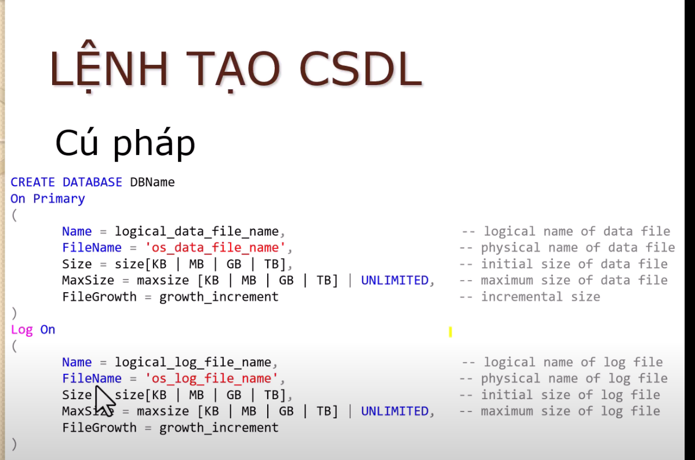
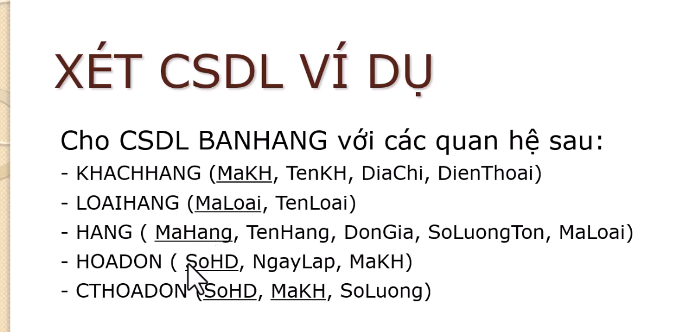

Hướng dẫn tạo 1 database trên mySQL
Bước 1 :Khởi tạo database

create database BANHANG_CNTT
on primary
(
Name = BANHANG_CNTT
filename = 'D:\Cong Viec EPU\Co So Du Lieu\DB_SinhVien\D19CNPM3.mdf'
size = 5mb,
maxsize = unlimited,
filegrowth = 1mb
)
log on
(
Name = BANHANG_CNTT_Log
filename = 'D:\Cong Viec EPU\Co So Du Lieu\DB_SinhVien\D19CNPM3.ldf'
size = 1mb,
maxsize = 10mb,
filegrowth = 1mb
)
Bước 2 : Tạo các table

+ Sử dụng câu lệnh :
create table name_table
+ Xác định typedef và
primary key của các thuộc tính bên
trong table
- Mã của thuộc tính nên để là int identity (khoi_tao,buoc_nhay)
- Số điện thoại or CCCD nên để kiểu char (n) ; String còn lại để varchar
(n) , Tiếng việt có dấu để nchar (n) or nvarchar (n)
- Creat khóa chính :
constraint PK_nameTable
primary key (name_thuocTinh)
- Nếu table trên nó có thuộc tính giống nhau , thì thuộc tính table dưới
phải kế thừa từ table trên !! Sử dụng cú pháp : name_thuocTinh
typedef references
name_table(name_thuocTinh) or
constraint FK_nameTable2
foreign key (name_thuocTinh)
references nameTable1
(name_thuocTinh)
Bước 3 : Điền giá trị vào bảng
+ Sử dụng câu lệnh :
insert into name_table(...)
values(
Điền các thuộc tính N'...' nếu là string , '...' nếu là kiểu char
hoặc số , các thuộc tính cách nhau bởi dấu phẩy
),
(...),
(...)
select * from
name_table
- PK là identity thì không cần nhập
- FK của bảng con phải kế thừa giá trị của bảng cha